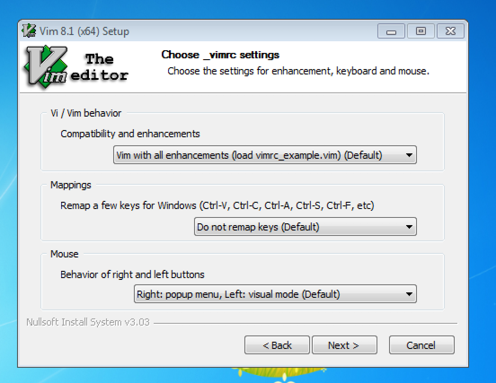
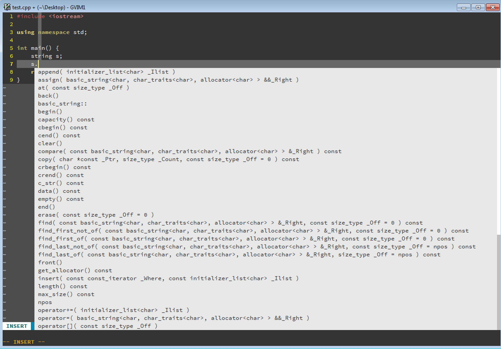

到这里 https://github.com/vim/vim-win32... 下载安装包,然后一步步安装. 如下所示

安装 vim 之后, 打开命令行, 输入 vim --version, 寻找类似下面的输出
-DDYNAMIC_PYTHON3_DLL=\"python37.dll\"
这里我的输出是 python37.dll, 所以你应该下载安装 python37 版本,到这里 https://www.python.org/downloads... 下载 python3.7.x,下载完成后安装即可, 注意在安装界面勾选将 Python 添加到 PATH 环境变量.
安装完成后打开一个新的命令行, 输入 python 或者 python3 看是否能进入 python环境,我假定能成功的命令为 python3.
说实话这个字体下载地址可是真难找, 在这里 https://github.com/adobe-fonts/s...下载完成后解压, 其字体目录如下
➜ SourceCodePro_FontsOnly-1.013 tree
.
├── LICENSE.txt
├── OTF
│ ├── SourceCodePro-Black.otf
│ ├── SourceCodePro-Bold.otf
│ ├── SourceCodePro-ExtraLight.otf
│ ├── SourceCodePro-Light.otf
│ ├── SourceCodePro-Regular.otf
│ └── SourceCodePro-Semibold.otf
├── ReadMe.html
├── SourceCodeProReadMe.html
└── TTF
├── SourceCodePro-Black.ttf
├── SourceCodePro-Bold.ttf
├── SourceCodePro-ExtraLight.ttf
├── SourceCodePro-Light.ttf
├── SourceCodePro-Regular.ttf
└── SourceCodePro-Semibold.ttf
拷贝 TTF 目录下的所有文件到 C:\Windows\Fonts 目录即可.
到这里 https://git-scm.com/download/win 下载 git 安装.
注意如下几个步骤
勾选 Git from the command line and also from 3rd-party software .
勾选 Use OpenSSH
勾选 Use the OpenSSL library
勾选 Checkout Windows-style, commit Unix-style line endings
其他保持默认, 一路 next 狂奔下去即可.
重新打开一个命令行, 执行如下命令下载配置文件
rd /s /q %USERPROFILE%\vimfiles
git clone https://github.com/ikey4u/vim.git %USERPROFILE%\vimfiles
现在就完成了基本的配置, 打开 gvim 看一下效果.
接着我们来安装插件, 在 gvim 里面执行 :PlugInstall ,该命令将会并行的为你安装所有的插件.
这里面的插件需要额外的依赖, 所需要的简单的依赖可以通过如下命令完成安装
python3 -m pip install neovim
当安装完插件后我们需要配置 %USERPROFILE%\vimfiles\vimrc 中的几个选项,参考 ./options.txt 或者 http://ahageek.com/writer/specia...
复杂依赖比如 YCM, 参见下节.
下载地址 https://cmake.org/download/, 安装时注意勾选将 cmake 添加到环境变量.
前方高能(又到了另一个十分痛苦的时刻了).
编译工具链安装安装可参考 https://github.com/ikey4u/cheats... 或者 http://ahageek.com/writer/specia...
首先恭喜你走到了这里, 阁下太强了! 现在我们开始编译 YCM.
cd %USERPROFILE%/vimfiles/plugged/YouCompleteMe
python3 install.py --clang-completer
这个会自动下载 llvm-clang, 然而, 如果下载不了就只能你自己手动下载了, 下载的是 libclang-xxx.tar.bz2, 然后放到这个目录下, 然而我并没有试过这个方法, 因为我通过网络下载成功了.
$HOME\vimfiles\plugged\YouCompleteMe\third_party\ycmd\clang_archives
顺利通过编译后, 写个 cpp 文件测试一下:
#include <iostream>
using namespace std;
int main() {
string s;
s.
return 0;
}
效果见图
